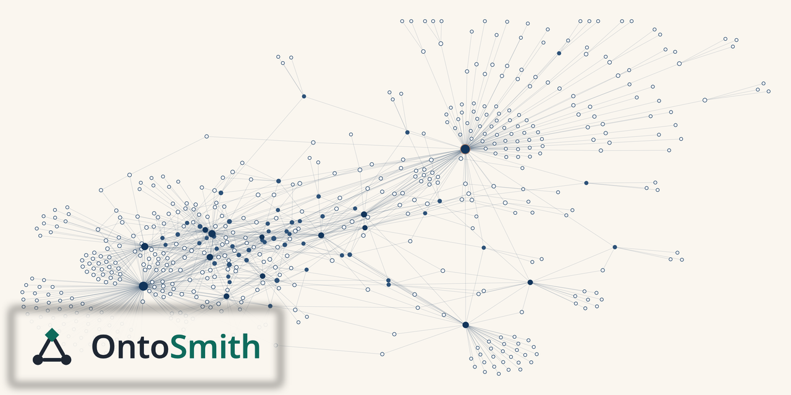
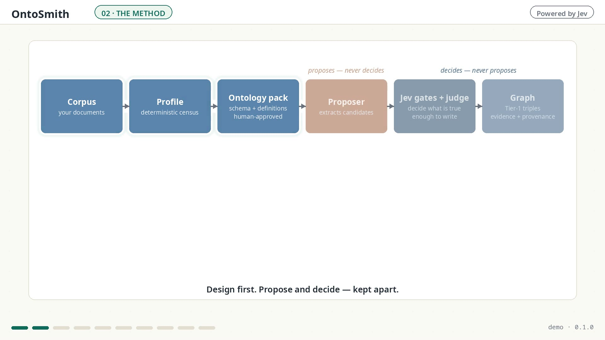
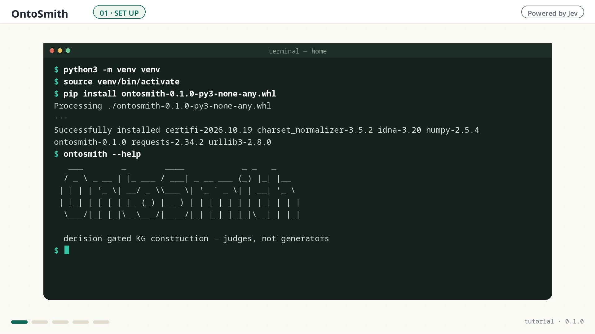
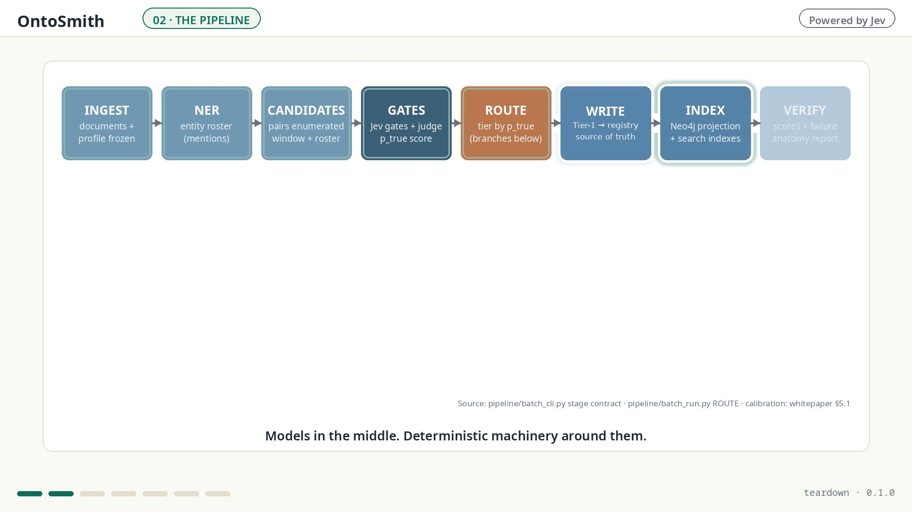

OntoSmith turns documents into ontology-based knowledge graphs. Cheap models propose, a pinned decision model gates what gets written, and the frontier seat stays off unless you switch it on.
The schema is a flat extraction contract — entity and relation types with definitions and boundary examples, drafted or imported and approved by a human. No class hierarchy, no inheritance, no logical axioms: OntoSmith is not an OWL ontology editor, and it runs no reasoning over the graph. The flatness is deliberate — per-type decisions are what make the quality measurable.
Install from PyPI — pip install ontosmith —
and the README’s step 1 runs with no API key:
try it.
The pipeline never asks one model to do everything. Each seat is filled by the cheapest model that measurably does that job well — and judgment sits in separate seats from proposing: a fitted pair judge converts the candidates, and the Jev gates decide what is written.
Proposes candidate triples for the entity pairs the pipeline enumerates — the parsing and roster work is local and deterministic. Fast, tireless, and not trusted — everything it proposes is checked.
Weighs every candidate against its evidence span and commits: verified, or into the review band. A small model built for exactly one skill — judgment — at a fraction of frontier cost.
Off by default. When you enable it, this seat takes adjudication escalations and evaluation judging — it never decides a build's triples. Frontier tokens are spent only where you point them.
Plus a drafting seat you bind yourself, and an embedder (text-embedding-3-large)
for the vector arm of search. Every seat is configuration, never code.
The stack underneath: Jev judges, and Neo4j stores — native graph, vector index, and full-text search in one store. A build requires both; setup is a first-class step in Connections.
The graph below was rendered from an actual build — the shipped legal pack’s reference corpus, judged triple by triple before a single edge was drawn.

See it work, do it yourself, then look inside.

A real build, start to finish: documents in, a judged and queryable graph out.

Install, set the seats, run a small build, then serve, search, and read the evidence.

The pipeline, the gates, the packs — and how the published numbers were audited.
The registry is the source of truth — it keeps every build’s history — and the graph itself lives in Neo4j: the store holds one graph, the current build’s, and a build under a changed ontology replaces it (named in the run, never silent). Search fuses lexical, graph, and vector arms — a graph with no embeddings still answers on two.
A new document type rarely arrives with an ontology ready. The builder drafts one from your
corpus profile and a short brief: by default a skeleton — your type names, with the definitions left as a
work list for you. Bind a drafting model and pass --llm, and that seat reads the profile and
proposes full definitions and boundary examples instead. Either way you review the draft, adjust what
your domain demands, and pin it as a domain pack of your own. The map grows with the territory.
Version-pinned packs, never domain code paths. Every domain pack stands on the same core baseline — core itself is not a domain pack, it is what the domain packs extend. A document type with no pack yet can grow its own — automatically.